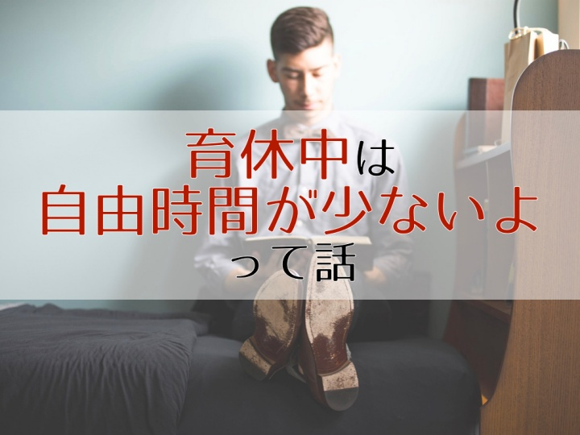

<!DOCTYPE html>
<html>
<head><meta name="generator" content="Hexo 3.9.0">
  <meta charset="utf-8">
  
<!-- Google Analytics -->
<script type="text/javascript">
(function(i,s,o,g,r,a,m){i['GoogleAnalyticsObject']=r;i[r]=i[r]||function(){
(i[r].q=i[r].q||[]).push(arguments)},i[r].l=1*new Date();a=s.createElement(o),
m=s.getElementsByTagName(o)[0];a.async=1;a.src=g;m.parentNode.insertBefore(a,m)
})(window,document,'script','//www.google-analytics.com/analytics.js','ga');

ga('create', 'UA-2714410-4', 'auto');
ga('require', 'linkid', 'linkid.js');
ga('send', 'pageview');

</script>
<!-- End Google Analytics -->


  
  <title>実録、育休を取得した男性サラリーマンの一日。自由時間は意外と少ないよという話。 | 共働き夫婦の楽らくライフ</title>
  <meta name="viewport" content="width=device-width, initial-scale=1, maximum-scale=1">
  
    <meta name="description" content="これから育休を取得する男性サラリーマンは以下のように考えているかもしれません。 「育休中は余裕があるだろうから、勉強や資格取得とか色々やるぞー！」 しかしこの記事で私が伝えたいこと。それは「育休中は仕事しているときより自由時間が少ないよ」ということです。 ただ、これだけでは「そんなことないでしょ！効率よくパパッとすませれば自由な時間は取れるでしょ！？」と思われるかもしれません。 そこで、この記">
<meta name="keywords" content="男性,育休,一日">
<meta property="og:type" content="article">
<meta property="og:title" content="実録、育休を取得した男性サラリーマンの一日。自由時間は意外と少ないよという話。">
<meta property="og:url" content="https://tomoraku-life.com/parental-leave-one-day/index.html">
<meta property="og:site_name" content="共働き夫婦の楽らくライフ">
<meta property="og:description" content="これから育休を取得する男性サラリーマンは以下のように考えているかもしれません。 「育休中は余裕があるだろうから、勉強や資格取得とか色々やるぞー！」 しかしこの記事で私が伝えたいこと。それは「育休中は仕事しているときより自由時間が少ないよ」ということです。 ただ、これだけでは「そんなことないでしょ！効率よくパパッとすませれば自由な時間は取れるでしょ！？」と思われるかもしれません。 そこで、この記">
<meta property="og:locale" content="ja">
<meta property="og:image" content="https://tomoraku-life.com/parental-leave-one-day/thumnail_eyecatch.001.jpeg">
<meta property="og:updated_time" content="2019-07-15T15:00:00.000Z">
<meta name="twitter:card" content="summary_large_image">
<meta name="twitter:title" content="実録、育休を取得した男性サラリーマンの一日。自由時間は意外と少ないよという話。">
<meta name="twitter:description" content="これから育休を取得する男性サラリーマンは以下のように考えているかもしれません。 「育休中は余裕があるだろうから、勉強や資格取得とか色々やるぞー！」 しかしこの記事で私が伝えたいこと。それは「育休中は仕事しているときより自由時間が少ないよ」ということです。 ただ、これだけでは「そんなことないでしょ！効率よくパパッとすませれば自由な時間は取れるでしょ！？」と思われるかもしれません。 そこで、この記">
<meta name="twitter:image" content="https://tomoraku-life.com/parental-leave-one-day/thumnail_eyecatch.001.jpeg">
<meta name="twitter:creator" content="@tomoraku_life">
  
  
    <link rel="alternate" href="/atom.xml" title="共働き夫婦の楽らくライフ" type="application/atom+xml">
  
  
    <link rel="icon" href="/images/favicon.ico">
  
  
    <link href="//fonts.googleapis.com/css?family=Source+Code+Pro" rel="stylesheet" type="text/css">
  
  <link rel="stylesheet" href="/css/style.css">
  <link href="https://fonts.googleapis.com/css?family=Concert+One" rel="stylesheet">
  <link rel="stylesheet" href="https://use.fontawesome.com/releases/v5.7.0/css/all.css">
  <script src="https://ajax.googleapis.com/ajax/libs/jquery/3.3.1/jquery.min.js"></script>
  <script src="/js/custom.js"></script>

  <script async src="//pagead2.googlesyndication.com/pagead/js/adsbygoogle.js"></script>
  <script>
     (adsbygoogle = window.adsbygoogle || []).push({
          google_ad_client: "ca-pub-7705145221063766",
          enable_page_level_ads: true
     });
  </script>
</head>
</html>
<body>
  <div id="container">
    <div id="wrap">
      <header id="header">
  <div id="banner"></div>
  <div id="header-outer" class="outer">
    <div id="header-title" class="inner">
      <h1 id="logo-wrap">
        <!--<a href="/" id="logo">共働き夫婦の楽らくライフ</a>-->
        <a href="/" id="logo"></a>
      </h1>
      
        <h2 id="subtitle-wrap">
          <a href="/" id="subtitle">現代を生きる多忙な共働き世帯が、いかに楽して楽しく生活できるかを考えるブログです</a>
        </h2>
      
    </div>
    <div id="header-inner" class="inner">
      <nav id="main-nav">
        
          <a class="main-nav-link" href="/categories/育休パパの経験談/">育休パパの経験談</a>
        
          <a class="main-nav-link" href="/categories/株主優待生活/">株主優待生活</a>
        
          <a class="main-nav-link" href="/categories/資産運用/">資産運用</a>
        
          <a class="main-nav-link" href="/categories/マイホーム/">マイホーム</a>
        
          <a class="main-nav-link" href="/about-this-page">プロフィール</a>
        
      </nav>
      <nav id="sub-nav">
        
          <a id="nav-rss-link" class="nav-icon" href="/atom.xml" title="RSSフィード"></a>
        
        <a id="nav-search-btn" class="nav-icon" title="検索"></a>
      </nav>
      <div id="search-form-wrap">
        <form action="//google.com/search" method="get" accept-charset="UTF-8" class="search-form"><input type="search" name="q" class="search-form-input" placeholder="Search"><button type="submit" class="search-form-submit">&#xF002;</button><input type="hidden" name="sitesearch" value="https://tomoraku-life.com"></form>
      </div>
    </div>
  </div>
</header>
      <div class="outer">
        <section id="main"><article id="post-parental-leave-one-day" class="article article-type-post" itemscope itemprop="blogPost">

  <div class="article-inner">
    
    
      <header class="article-header">
        
  

    <ul class="breadcrumb">
        <li itemscope="itemscope" itemtype="http://data-vocabulary.org/Breadcrumb">
        <a href="/" itemprop="url">
         <span itemprop="title">ホーム</span>
        </a>
        </li>
        <li itemscope="itemscope" itemtype="http://data-vocabulary.org/Breadcrumb">
        <a href="/categories/育休パパの経験談" itemprop="url">
         <span itemprop="title">育休パパの経験談</span>
        </a>
        </li>
        <li itemscope="itemscope" itemtype="http://data-vocabulary.org/Breadcrumb">
        <a href="" itemprop="url">
         <span itemprop="title"></span>
        </a>
        </li>
    </ul>

    <h1 class="article-title" itemprop="name">
      実録、育休を取得した男性サラリーマンの一日。自由時間は意外と少ないよという話。
    </h1>

    <div class="article-date">
        <time datetime="2019-07-15T15:00:00.000Z" itemprop="datePublished" class="published">2019.07.16</time>
        
          <time datetime="2019-07-15T15:00:00.000Z" itemprop="dateModified" class="modified">2019.07.16</time>
        
    </div>
    
    

      </header>
    

    
      <div class="sns_buttons">
    
<ul class="shareList">
  <li class="shareList__item"><a class="shareList__link icon-twitter" href="https://twitter.com/intent/tweet?text=実録、育休を取得した男性サラリーマンの一日。自由時間は意外と少ないよという話。 https://tomoraku-life.com/parental-leave-one-day/index.html" onClick="window.open(encodeURI(decodeURI(this.href)),'twwindow','width=550, height=450, personalbar=0, toolbar=0, scrollbars=1'); return false;" target="_blank" title="Twitter"></a></li>
  <li class="shareList__item"><a class="shareList__link icon-facebook" href="http://www.facebook.com/share.php?u=https://tomoraku-life.com/parental-leave-one-day/index.html" onClick="window.open(encodeURI(decodeURI(this.href)),'fbwindow','width=550, height=450, personalbar=0, toolbar=0, scrollbars=1'); return false;" target="_blank" title="Facebook"></a></li>
  <li class="shareList__item"><a class="shareList__link icon-hatebu" href="http://b.hatena.ne.jp/add?mode=confirm&url=https://tomoraku-life.com/parental-leave-one-day/index.html&title=実録、育休を取得した男性サラリーマンの一日。自由時間は意外と少ないよという話。" target="_blank" title="はてなブックマーク"></a></li>
  <li class="shareList__item"><a class="shareList__link icon-line" href="http://line.me/R/msg/text?実録、育休を取得した男性サラリーマンの一日。自由時間は意外と少ないよという話。 https://tomoraku-life.com/parental-leave-one-day/index.html" target="_blank" title="LINE"></a></li>
</ul>
</div>

    

    <div class="article-entry" itemprop="articleBody">
      
        

<p>これから育休を取得する男性サラリーマンは以下のように考えているかもしれません。</p>
<p>「育休中は余裕があるだろうから、勉強や資格取得とか色々やるぞー！」</p>
<p>しかしこの記事で私が伝えたいこと。それは「<strong>育休中は仕事しているときより自由時間が少ないよ</strong>」ということです。</p>
<p>ただ、これだけでは「そんなことないでしょ！効率よくパパッとすませれば自由な時間は取れるでしょ！？」と思われるかもしれません。</p>
<p>そこで、この記事では私の育休中のとある一日の生活を具体的に紹介していきたいと思います。</p>
<a id="more"></a>

<div class="toc">

<!-- toc -->

<ul>
<li><a href="#si-noyu-xiu-qu-de-shi-nozhuang-kuang">私の育休取得時の状況</a></li>
<li><a href="#wu-qian-hajia-shi-tochang-nan-tonooyou-bi">午前は家事と長男とのお遊び</a><ul>
<li><a href="#6-30-qi-chuang-tozhao-gohantozhao-siyawa">(6:30) 起床と朝ごはんと朝シャワー</a></li>
<li><a href="#9-00-gomichu-sitoxi-zhuo-wu-di-yi-dan">(9:00) ゴミ出しと洗濯物 [第一弾]</a></li>
<li><a href="#10-00-chang-nan-tooyou-bi">(10:00) 長男とお遊び</a></li>
</ul>
</li>
<li><a href="#wu-hou-hayong-shi-woji-maseru">午後は用事を済ませる</a><ul>
<li><a href="#12-00-zhou-gohan">(12:00) 昼ごはん</a></li>
<li><a href="#12-30-chang-nan-hazhou-qin">(12:30) 長男は昼寝</a></li>
<li><a href="#13-00-wan-gohanzuo-ritoxi-zhuo-wu-di-2-dan">(13:00) 晩ごはん作りと洗濯物 [第2弾]</a></li>
<li><a href="#14-00-shu-lei-yarananyara">(14:00) 書類やらなんやら</a></li>
<li><a href="#14-30-chang-nan-gaqi-chuang">(14:30) 長男が起床</a></li>
<li><a href="#16-00-terebi">(16:00) テレビ</a></li>
</ul>
</li>
<li><a href="#ye-harutinwaku">夜はルーチンワーク</a><ul>
<li><a href="#18-00-wan-gohan">(18:00) 晩ごはん</a></li>
<li><a href="#19-00-ofeng-lu">(19:00) お風呂</a></li>
<li><a href="#20-00-qin-kasitukekaranoye-qi-kidui-ying">(20:00) 寝かしつけからの夜泣き対応</a></li>
<li><a href="#21-00-jia-shi">(21:00) 家事</a></li>
<li><a href="#22-00kurai-kokodeyatutozi-you-shi-jian">(22:00くらい) ここでやっと自由時間</a></li>
</ul>
</li>
<li><a href="#matome">まとめ</a></li>
</ul>
<!-- tocstop -->

</div>

<h2><span id="si-noyu-xiu-qu-de-shi-nozhuang-kuang">私の育休取得時の状況</span><a href="#si-noyu-xiu-qu-de-shi-nozhuang-kuang" class="header-anchor">#</a></h2><p>まず前提として、長男（1歳半）がおり、第二子が誕生するのにあわせて育休を3か月間取得したときの話です。</p>
<p>基本的な役割分担としては妻が長女（赤ちゃん）のお世話をし、長男は私がお世話をする。家事は分担して行いますが、妻は3時間おきの授乳で睡眠不足のため、できるだけ私が担当するようにしています。</p>
<h2><span id="wu-qian-hajia-shi-tochang-nan-tonooyou-bi">午前は家事と長男とのお遊び</span><a href="#wu-qian-hajia-shi-tochang-nan-tonooyou-bi" class="header-anchor">#</a></h2><p>ここからとある1日を順を追って紹介していきたいと思います。</p>
<p>ちなみに、時間を書いていますが大雑把です。きっかり時計にあわせて動いてる訳ではないです。</p>
<h3><span id="6-30-qi-chuang-tozhao-gohantozhao-siyawa">(6:30) 起床と朝ごはんと朝シャワー</span><a href="#6-30-qi-chuang-tozhao-gohantozhao-siyawa" class="header-anchor">#</a></h3><p>朝は6:30に起床し、私が家族3人分（自分、妻、長男）の朝ごはんの用意をします。</p>
<p>食事の準備ができたら、長男にごはんを食べさせながら食事をします。長男にごはんを食べさせるのは日によって大変さ違いますが、あまり食べたがらない場合はあの手この手でなんとか食べさせます。</p>
<p>長男は肌が弱くすぐに肌荒れしてしまうので、朝にシャワーを浴びています。そこから、全身に皮膚科でもらった薬を塗り、服を着替えさせます。<strong>嫌がる子供をなんとか抑えながら薬をぬったり服を着させるのは想像以上に重労働で結構疲れます</strong>。。</p>
<h3><span id="9-00-gomichu-sitoxi-zhuo-wu-di-yi-dan">(9:00) ゴミ出しと洗濯物 [第一弾]</span><a href="#9-00-gomichu-sitoxi-zhuo-wu-di-yi-dan" class="header-anchor">#</a></h3><p>曜日によってゴミ出しをします。長男と赤ちゃんの2人分のオムツがあるので大量です。これの重いこと。</p>
<p>乾燥機付きのドラム式洗濯機なので、昨晩にセットした洗濯物ができあがっています。洗濯機から洗濯物を取り出して畳んで片付けます。赤ちゃんの服は大人と一緒には洗えないので、第一弾は大人と長男の分の服です。第一弾の洗濯物を取り出して、赤ちゃんの洗濯物を洗濯機にセットします。</p>
<h3><span id="10-00-chang-nan-tooyou-bi">(10:00) 長男とお遊び</span><a href="#10-00-chang-nan-tooyou-bi" class="header-anchor">#</a></h3><p>長男から「遊んで、遊んで」攻撃をくらいます。</p>
<p>子育て支援センターに連れて行くことが多いですが、どこかで子供向けのイベントがやっていれば午前中にでかけます。<strong>ここで長男を疲れさせると午後にちゃんと寝てくれるので、午前中の遊びは全力でやります（笑）</strong></p>
<p>これで午前中は終了！<strong>ちなみにここまで自分の自由時間なし</strong>。</p>
<h2><span id="wu-hou-hayong-shi-woji-maseru">午後は用事を済ませる</span><a href="#wu-hou-hayong-shi-woji-maseru" class="header-anchor">#</a></h2><h3><span id="12-00-zhou-gohan">(12:00) 昼ごはん</span><a href="#12-00-zhou-gohan" class="header-anchor">#</a></h3><p>私が長男と遊んでいる間に妻が昼ごはんの用意をしてくれています。妻よ、ありがとう。</p>
<h3><span id="12-30-chang-nan-hazhou-qin">(12:30) 長男は昼寝</span><a href="#12-30-chang-nan-hazhou-qin" class="header-anchor">#</a></h3><p>昼ごはんのあと、長男がだいたい眠くなってくるので寝かせます。というか寝てくれ。<strong>部屋を暗くしたり、小さい声で話たりと長男が寝る環境を全力で作り上げます</strong>。</p>
<p>長男が寝ると大人は休憩モードに突入（笑）15分ほど休んだら家事再開です。</p>
<h3><span id="13-00-wan-gohanzuo-ritoxi-zhuo-wu-di-2-dan">(13:00) 晩ごはん作りと洗濯物 [第2弾]</span><a href="#13-00-wan-gohanzuo-ritoxi-zhuo-wu-di-2-dan" class="header-anchor">#</a></h3><p>長男が寝ている間に晩ごはんの用意をします。妻が晩ごはんを作ってくれることもありますが、この場合は赤ちゃんを抱っこしています。</p>
<p>この頃、午前中にセットした赤ちゃんの洗濯物が終わっているので、洗濯機から取り出して畳んで片付けます。</p>
<h3><span id="14-00-shu-lei-yarananyara">(14:00) 書類やらなんやら</span><a href="#14-00-shu-lei-yarananyara" class="header-anchor">#</a></h3><p>育休中もなんだかんだと細かい手続き（育休関連とか赤ちゃん関連とか）があるので、まだ長男が寝ていたらこのタイミングで育休関連の書類を片付けたり区役所に行ったりします。</p>
<p><strong>とくにやるべきことがなければ長男が起きるまで30分くらいの自由時間が発生</strong>！</p>
<h3><span id="14-30-chang-nan-gaqi-chuang">(14:30) 長男が起床</span><a href="#14-30-chang-nan-gaqi-chuang" class="header-anchor">#</a></h3><p>だいたい2時間くらいで起床。</p>
<p>そこから再度「遊んで、遊んで」攻撃が！寝てスッキリしているので攻撃力が増しています（笑）</p>
<p>おもちゃで遊んだり絵本読んだり、近くの公園いったりします。</p>
<h3><span id="16-00-terebi">(16:00) テレビ</span><a href="#16-00-terebi" class="header-anchor">#</a></h3><p>夕方になるとNHK Eテレで「いないいないばあっ！」や「おかあさんといっしょ」などの子供向け番組が始まります。ニュースとかバラエティには子供はぜんぜん興味を示さないですが、NHK Eテレの番組はじーっとみたり、歌やダンスが始まると飛び跳ねたりします。</p>
<p>この間、Eテレに子守していただき子供は勝手に楽しんでくれているので、<strong>大人はお茶を飲んだりとちょっと息抜きできます</strong>。</p>
<p>ありがとうEテレ。<strong>Eテレは神</strong>です。NHKの受信料、しっかり払います！</p>
<p>ちなみに、「おかあさんといっしょ」をおとうさん（私）と一緒にみてます。この番組タイトルは価値観が古いので変えた方がいいような。。</p>
<h2><span id="ye-harutinwaku">夜はルーチンワーク</span><a href="#ye-harutinwaku" class="header-anchor">#</a></h2><p>夜は晩ごはんから寝かしつけるまで毎日同じコースのルーチンワークです。ここまででで記事が長くなってしまったので、ここからは短めに書きたいと思います。</p>
<h3><span id="18-00-wan-gohan">(18:00) 晩ごはん</span><a href="#18-00-wan-gohan" class="header-anchor">#</a></h3><p>18:00に晩ごはんを長男に食べさせながら自分も食事します。</p>
<h3><span id="19-00-ofeng-lu">(19:00) お風呂</span><a href="#19-00-ofeng-lu" class="header-anchor">#</a></h3><p>夜の大仕事のひとつです。妻との共同作業で子供二人をお風呂にいれます。</p>
<p>お風呂から上がった長男はなぜかテンションが高い・・・。<strong>彼との追いかけっこの末</strong>、なんとか皮膚科の薬を塗って服を着せます。</p>
<h3><span id="20-00-qin-kasitukekaranoye-qi-kidui-ying">(20:00) 寝かしつけからの夜泣き対応</span><a href="#20-00-qin-kasitukekaranoye-qi-kidui-ying" class="header-anchor">#</a></h3><p>1日の最後の大仕事である「寝かしつけ」です。</p>
<p>「そろそろ寝よっか」と長男に告げると、ブンブン！と首を振ります。ここから寝る気になってくれるまで絵本読みつつ根気よく付き合います。</p>
<h3><span id="21-00-jia-shi">(21:00) 家事</span><a href="#21-00-jia-shi" class="header-anchor">#</a></h3><p>寝る前に家事を片付けます。お風呂掃除、食器洗い、朝ごはんの下ごしらえ、洗濯。<strong>集中して家事ができる唯一の時間です</strong>。</p>
<h3><span id="22-00kurai-kokodeyatutozi-you-shi-jian">(22:00くらい) ここでやっと自由時間</span><a href="#22-00kurai-kokodeyatutozi-you-shi-jian" class="header-anchor">#</a></h3><p><strong>家事が終わったらやっと自由時間です</strong>。うまくいけば1時間くらい自由時間ができます。</p>
<p>ただ、日によっては長男がなかなか寝なかったり。赤ちゃんが泣き続けてしまうことも。その場合、自由時間は返上です・・・。</p>
<p>翌朝6:30に起きるため、23:00には寝ます。</p>
<div class="talk"><div class="faceicon"><div class="name">コマ</div></div><div class="chatting"><div class="says">
<p>結局、長男が寝てる間しか自由時間はなく、1日せいぜい1時間とかです。このブログ記事もなけなしの時間で書いてます。</p>
</div></div></div>

<h2><span id="matome">まとめ</span><a href="#matome" class="header-anchor">#</a></h2><p>ほとんど長男の話になってしまいました（笑）第二子のタイミングで育休を取得する男性は、ほとんどの時間を上の子と過ごすことになると思います。</p>
<p>子供の相手はエンドレスのため「育休中に勉強するぞ！」などと意気込んでいると、なかなかやりたいことができず、ストレスが溜まる結果になってしまいかねません。正直いって、<strong>通勤中に電車で読書できる仕事している時の方が勉強しやすい</strong>と思うくらいです。育休中は育児を最優先に集中しつつ、<strong>やりたいことは時間がとれた時だけやる、くらいのスタンスで臨むとよいです</strong>。</p>
<p>今回は第二子の育休の話のなので、第一子で育休を取った場合はもっと時間的余裕があると思います。しかし、これは別の話になりませうが、第一子の場合ははじめて育児で心の余裕がなく、勉強どころじゃないかもしれません。</p>
<div class="blog-card"><a href="/parental-leave-mind-change/"><div class="blog-card-thumbnail"></div><div class="blog-card-content"><div class="blog-card-title">男性が育休を取得するまでの迷いとは？私はこうしてマインドチェンジをしました。 </div></div><div class="clear"></div></a></div>
<div class="blog-card"><a href="/parental-leave-vs-homecoming/"><div class="blog-card-thumbnail"></div><div class="blog-card-content"><div class="blog-card-title">里帰り出産よりも夫が育休を取得した方がいい3つの理由 </div></div><div class="clear"></div></a></div>
<div class="blog-card"><a href="/parental-leave-merit/"><div class="blog-card-thumbnail"></div><div class="blog-card-content"><div class="blog-card-title">経験してわかった男性が育休を取得する5つのメリット </div></div><div class="clear"></div></a></div>

      
    </div>

    
      <div class="sns_buttons">
    
      この記事が気に入ったら友達にシェアしよう
    
<ul class="shareList">
  <li class="shareList__item"><a class="shareList__link icon-twitter" href="https://twitter.com/intent/tweet?text=実録、育休を取得した男性サラリーマンの一日。自由時間は意外と少ないよという話。 https://tomoraku-life.com/parental-leave-one-day/index.html" onClick="window.open(encodeURI(decodeURI(this.href)),'twwindow','width=550, height=450, personalbar=0, toolbar=0, scrollbars=1'); return false;" target="_blank" title="Twitter"></a></li>
  <li class="shareList__item"><a class="shareList__link icon-facebook" href="http://www.facebook.com/share.php?u=https://tomoraku-life.com/parental-leave-one-day/index.html" onClick="window.open(encodeURI(decodeURI(this.href)),'fbwindow','width=550, height=450, personalbar=0, toolbar=0, scrollbars=1'); return false;" target="_blank" title="Facebook"></a></li>
  <li class="shareList__item"><a class="shareList__link icon-hatebu" href="http://b.hatena.ne.jp/add?mode=confirm&url=https://tomoraku-life.com/parental-leave-one-day/index.html&title=実録、育休を取得した男性サラリーマンの一日。自由時間は意外と少ないよという話。" target="_blank" title="はてなブックマーク"></a></li>
  <li class="shareList__item"><a class="shareList__link icon-line" href="http://line.me/R/msg/text?実録、育休を取得した男性サラリーマンの一日。自由時間は意外と少ないよという話。 https://tomoraku-life.com/parental-leave-one-day/index.html" target="_blank" title="LINE"></a></li>
</ul>
</div>

    

    <div class="article-entry">
      <!-- Google Adsense -->
      <script async src="https://pagead2.googlesyndication.com/pagead/js/adsbygoogle.js"></script>
      <!-- ディスプレイ(記事の終わり) -->
      <ins class="adsbygoogle"
          style="display:block"
          data-ad-client="ca-pub-7705145221063766"
          data-ad-slot="8691379280"
          data-ad-format="auto"
          data-full-width-responsive="true"></ins>
      <script>
          (adsbygoogle = window.adsbygoogle || []).push({});
      </script>
      <!-- Google Adsense -->
    </div>

    <div class="article-entry">
      <h3>関連する記事</h3>
      <!-- Google Adsense -->
      <script async src="https://pagead2.googlesyndication.com/pagead/js/adsbygoogle.js"></script>
      <ins class="adsbygoogle"
          style="display:block"
          data-ad-format="autorelaxed"
          data-ad-client="ca-pub-7705145221063766"
          data-ad-slot="6224465210"></ins>
      <script>
          (adsbygoogle = window.adsbygoogle || []).push({});
      </script>
      <!-- Google Adsense -->
    </div>

    <footer class="article-footer">
      
    </footer>

  </div>
</article>

</section>
        
          <aside id="sidebar">
  
    <div class="widget-wrap">
  <h3 class="widget-title">自己紹介</h3>
  <div class="widget">
    <div class="profile">
      
      <p>コマ</p>
    </div>
    <p>
      妻と子供２人とマイホームで暮らし、日々「いかに楽して」「いかに楽しく」生活できるかを考えています。
      子供が産まれたタイミングで育休を取得したことで人生が豊かになりました。
    </p>
    <div style="text-align: center;">
      <a href="https://twitter.com/tomoraku_life?ref_src=twsrc%5Etfw" class="twitter-follow-button"
        data-show-count="false">Follow @tomoraku_life</a>
      <script async src="https://platform.twitter.com/widgets.js" charset="utf-8"></script>
    </div>
    <p>
      お問い合わせ・ご連絡はTwitterのDMにてお受けします。
    </p>
  </div>
</div>
  
    <div class="widget-wrap">
  <h3 class="widget-title">当ブログのアピール</h3>
  <div class="widget">
    <p>
      <strong>
        <ol>
          <li>累計80万PV達成！</li>
          <li>Googleアドセンス収益、累計30万円達成！</li>
        </ol>
      </strong>
    </p>
    <p>
      読者のみなさまのおかげです。これからもお役に立てる記事を書いていきますので、どうぞよろしくお願いします！
    </p>
  </div>
</div>
  
    
  <div class="widget-wrap">
    <h3 class="widget-title">カテゴリ</h3>
    <div class="widget">
      <ul class="category-list"><li class="category-list-item"><a class="category-list-link" href="/categories/Apple製品/">Apple製品</a><span class="category-list-count">12</span></li><li class="category-list-item"><a class="category-list-link" href="/categories/ふるさと納税/">ふるさと納税</a><span class="category-list-count">5</span></li><li class="category-list-item"><a class="category-list-link" href="/categories/ブログ運営/">ブログ運営</a><span class="category-list-count">2</span></li><li class="category-list-item"><a class="category-list-link" href="/categories/プログラミング/">プログラミング</a><span class="category-list-count">3</span></li><li class="category-list-item"><a class="category-list-link" href="/categories/マイホーム/">マイホーム</a><span class="category-list-count">13</span></li><li class="category-list-item"><a class="category-list-link" href="/categories/妊活／不妊治療/">妊活／不妊治療</a><span class="category-list-count">4</span></li><li class="category-list-item"><a class="category-list-link" href="/categories/子育て/">子育て</a><span class="category-list-count">5</span></li><li class="category-list-item"><a class="category-list-link" href="/categories/日記/">日記</a><span class="category-list-count">17</span></li><li class="category-list-item"><a class="category-list-link" href="/categories/株主優待生活/">株主優待生活</a><span class="category-list-count">8</span></li><li class="category-list-item"><a class="category-list-link" href="/categories/生活の知恵/">生活の知恵</a><span class="category-list-count">33</span></li><li class="category-list-item"><a class="category-list-link" href="/categories/育休パパの経験談/">育休パパの経験談</a><span class="category-list-count">12</span></li><li class="category-list-item"><a class="category-list-link" href="/categories/読書/">読書</a><span class="category-list-count">1</span></li><li class="category-list-item"><a class="category-list-link" href="/categories/資産運用/">資産運用</a><span class="category-list-count">8</span></li><li class="category-list-item"><a class="category-list-link" href="/categories/音楽/">音楽</a><span class="category-list-count">5</span></li></ul>
    </div>
  </div>


  
</aside>
        
      </div>
      <footer id="footer">
  
  <div class="outer">
    <div id="footer-info" class="inner">
      &copy; 2019 共働き夫婦の楽らくライフ
    </div>
  </div>
</footer>

      <div id="menu">
        <div class="menu-title">
          <a href="/"></a>
        </div>
        <a id="main-nav-toggle" class="nav-icon"></a>
      </div>
      <div id="page_top"><a href="#"></a></div>
    </div>
    <nav id="mobile-nav">
  
    <a href="/categories/育休パパの経験談/" class="mobile-nav-link">育休パパの経験談</a>
  
    <a href="/categories/株主優待生活/" class="mobile-nav-link">株主優待生活</a>
  
    <a href="/categories/資産運用/" class="mobile-nav-link">資産運用</a>
  
    <a href="/categories/マイホーム/" class="mobile-nav-link">マイホーム</a>
  
    <a href="/about-this-page" class="mobile-nav-link">プロフィール</a>
  
</nav>
    

<script src="//ajax.googleapis.com/ajax/libs/jquery/2.0.3/jquery.min.js"></script>


<script src="/js/script.js"></script>


  </div>
</body>
</html>